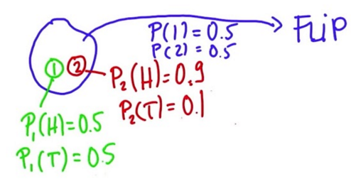

Le \(B\) be an event so that \(P(B) > 0\). Then the conditional probability of an event \(A\) given that \(B\) has occurred, if \(A\) and \(B\) are not independent is:
$$P(A | B) = \frac{P(A \cap B)}{P(B)}$$
but if \(A\) and \(B\) are independent, it becomes:
$$P(A|B) = P(A) \, \, \, \text{where} \, \, \, P(B)>0$$
It is always useful to draw the true table
IID random variables
said to be IID if they are independent and identically distributed
independent: statistically unrelated from one and another
identically distributed: all having been drawn from the same population distribution
are the default model for random samples
Conditional probability rolling a dice
The probability of getting a 3 rolling a standar dice is assumed to be \(\frac{1}{6}\). Suppose you're given the extra information that the die roll was and odd number, hence 1, 3, or 5.
Conditional on this new information, what is the probability of getting a 3?
$$P(A|B) = \frac{P(A \cap B)}{P(B)} = \frac{P(\{3\})}{P(\{1,3,5\})} = \frac{1/6}{3/6} \,\,\, \therefore $$
$$P(\text{three given that roll is odd}) = P(A|B) = \frac{1}{3}$$
Total probability of a non-independent event
Given \(P(B)\), \(P(A|B)\) and \(P(A|¬B)\) the total probability of \(A\) is:
$$P(A) = P(A|B) * P(B) + P(A|¬B) * P(¬B)$$
\(¬B = B^{c}\)
Medical example
Consider the next info about the probability of have a disease, and that related with the test effectiveness:
$$P(DISEASE) = 0.1 \hspace{2cm} P(¬DISEASE)=0.9$$
$$\begin{array}{c|c}
P(POS | DISEASE) = 0.9 & P(NEG | DISEASE) = 0.1 \\
P(POS | ¬DISEASE) = 0.2 & P(NEG | ¬DISEASE) = 0.8
\end{array}$$
The next table illustrates the probability associated to each combination of having or not the disease, and obtaining a positive or negative result in the test:
DISEASE
TEST
P(·)
Y
POS
0.09
\(P(POS | DISEASE) \cdot P(DISEASE)\)
Y
NEG
0.01
\(P(NEG | ¬DISEASE) \cdot P(DISEASE)\)
N
POS
0.18
\(P(POS | ¬DISEASE) \cdot P(¬DISEASE)\)
N
NEG
0.72
\(P(NEG | ¬DISEASE) \cdot P(¬DISEASE)\)
\(\sum = \)
1.00
To obtain the total probability of obtain a POSITIVE result on the test, we arrange the info as:
$$\begin{array}{ccl}
P(POS) & = & P(POS | DISEASE) \cdot P(DISEASE) + P(POS | ¬DISEASE) \cdot P(¬DISEASE) \\
& = & 0.9 \cdot 0.1 + 0.2 \cdot 0.9 \\
& = & 0.27
\end{array}$$
$$\boxed{P(\text{POSITIVE RESULT}) = 0.27}$$
Which corresponds to the sum of the first and third row of the table.
Two coin
Consider a bag with two coins. It is known that coin 1is fair, i.e, \(P_1(H)=P(H|1)=0.5\), but coin 2is loaded in a way that \(P_2(H)=P(H|¬1)=0.9\). The probability of pick any of the two coins from the bag is the same, so \(P(1)=0.5\) and \(P(2)=P(¬1)=0.5\)

Determine the probability of get a head on the first flip, if you pick one coin of the bag.
Using the total probability definition we have:
$$\begin{array}{ccl}
P(H) & = & P(H|1) \cdot P(1) + P(H|¬1) \cdot P(¬1) \\
& = & 0.5 \cdot 0.5 + 0.9 \cdot 0.5 \\
& = & 0.25 + 0.45 \\
& = & 0.7
\end{array}$$
$$\boxed{P(H) = 0.7}$$
Which can also be obtained from the truth table:
Pick
Flip
\(P(·)\)
1
H
0.25
\(P(H|1) \cdot P(1)\)
1
T
0.25
\(P(T|1) \cdot P(1)\)
2
H
0.45
\(P(H|¬1) \cdot P(¬1)\)
2
T
0.05
\(P(T|¬1) \cdot P(¬1)\)
\(\sum =\)
1.0
Two coins, two flips
Considering the coins of the previous exercise. Determine the probability of picking a coin, and fliping it twice, see first a head (H)followed by a tail(T).